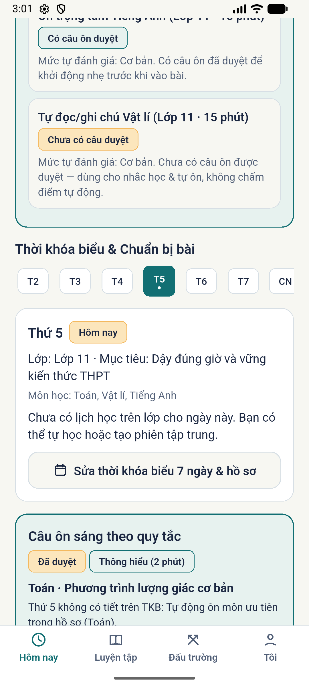

Dự án nghiên cứu khoa học kỹ thuật
MindClock
Ứng dụng Android hỗ trợ quản lý thời gian, báo thức và nhịp học tập cho học sinh THPT
Lĩnh vực: Công nghệ thông tin
Thức dậy đúng giờ – Học cùng nhau – Tiến bộ mỗi ngày
Vấn đề
Học sinh dễ tắt báo thức rồi ngủ lại; lịch học, luyện tập và động lực bạn bè còn rời rạc.
Mục tiêu
Kết nối giờ thức dậy với kế hoạch học, thử thách ôn tập và động lực duy trì thói quen.
Android-first · Flutter + Kotlin native · FastAPI + PostgreSQL · thử nghiệm theo kịch bản

Nguồn ảnh: ảnh chụp màn hình bản chạy thử MindClock trong repo dự án.
01 / 04
02
Quá trình thực hiện
1Phát hiện vấn đề
2Thiết kế luồng học
3Xây dựng nguyên mẫu
4Tích hợp báo thức, TKB và AI
5Thêm streak, không gian học và đấu trường
6Thử nghiệm, ghi nhận và cải tiến
Báo thức có đường dự phòng cục bộ; AI chỉ hỗ trợ khi người học đồng ý.
Nguồn ảnh: ảnh chụp màn hình bản chạy thử MindClock trong repo dự án.
02 / 04
03
Kết quả
Báo thức thử tháchMở câu hỏi ôn tập sau khi thức dậy.
Streak bạn bèNhóm cam kết và theo dõi chuỗi ngày học.
Không gian học cùng AITimer tập trung; học một mình hoặc cùng MindClock AI.
Luyện tập theo mônNhập đáp án, trình bày cách làm và nhận gợi ý.
Đấu trường kiến thứcLuyện đơn đã có; giao hữu/rank nhiều máy đang ở lộ trình thử nghiệm.
Nguồn ảnh: ảnh chụp màn hình bản chạy thử MindClock trong repo dự án.
03 / 04
04
Ý nghĩa / Kết luận
MindClock kết nối báo thức, kế hoạch học tập, thử thách ôn tập và động lực bạn bè trong một ứng dụng Android thống nhất. Sản phẩm giúp học sinh bắt đầu ngày mới bằng một hoạt động học ngắn, duy trì thói quen qua streak và học tập có định hướng hơn.
Đóng góp
- Quản lý thời gian chủ động hơn.
- Biến thử thách buổi sáng thành cơ hội ôn tập.
- Tạo môi trường học cùng AI và cạnh tranh kiến thức có kiểm soát.
Hướng phát triển
Hoàn thiện streak nhóm · đồng bộ bạn bè · rank nhiều máy · kiểm thử Android thật · đánh giá AI trên dữ liệu độc lập.
Giới hạn hiện tại: Giao hữu/rank nhiều máy và báo thức trên thiết bị Android vật lý cần được kiểm thử thêm.
Nguồn ảnh: ảnh chụp màn hình bản chạy thử MindClock trong repo dự án.
04 / 04